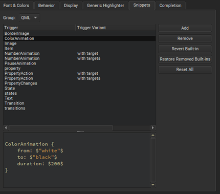

Snippets
To add, change, and remove snippets in the snippet editor, select Preferences > Text Editor > Snippets.
Qt Creator has built-in snippets in the following categories:
- Text snippets, which can have any text string. For example, code comments
- C++ code snippets, which specify C++ code constructs
- CMake code snippets that you can use when editing
CMakeLists.txtfiles in the CMake editor - QML code snippets, which specify QML code constructs
- Nim code snippets, which specify Nim code constructs

Built-in C++ code snippets.

Built-in QML code snippets.
Editing Snippets
Select a snippet in the list to edit it in the snippet editor.
The snippet editor offers:
- Highlighting
- Indentation
- Parentheses matching
- Basic code completion
Specify the variables for the snippets in the following format:
$variable$
Specify Qt Creator variables in the following format:
%{variable}
For example, the following variable expands to the name of the project containing the file that is currently open in the editor: %{CurrentDocument:Project:Name}.
Use unique variable names within a snippet because all instances of a variable are renamed when you specify a value for it.
To determine the case of values you enter in snippets, use the following modifiers:
:cconverts the initial letter of the string to upper case:lconverts the string to lower case:uconverts the string to upper case
For example, add the following line to the class snippet to specify that the function name is converted to all lower case characters regardless of how you specify the value of the $name$ variable:
void $name:l$() {}

The snippet editor does not check the syntax of the snippets that you edit or add. However, when you use the snippets, the code editor marks any errors by underlining them in red.
To discard the changes you made to a built-in snippet, select Revert Built-in.
Removing Snippets
The list of suggestions might show several similar built-in snippets for different use cases. To make it shorter when you write code, remove the built-in snippets that you do not need. If you need them later, you can restore them.
To remove snippets, select a snippet in the list, and then select Remove. To restore the removed snippets, select Restore Removed Built-ins.
Resetting Snippets
To remove all added snippets and to restore all removed snippets, select Reset All.
Note: If you now select OK or Apply, you permanently lose all your own snippets.
See also Complete CMake code, Document code, Use Qt Creator variables, Nim, Add code snippets to the auto-complete menu, Complete code, and Completion.